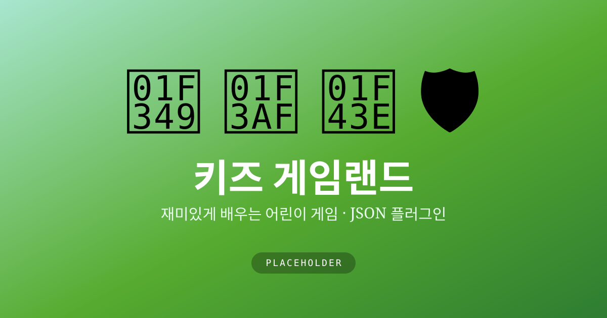

키즈 게임랜드 게임 추가kids-game-land · JSON 플러그인
어린이 교육 게임 플랫폼에 새 게임을 끼워 넣는다. 레포를 클론해 로컬에서 띄우고 — games.json에 항목 하나를 더하면 게임이 목록에 자동으로 올라온다.
무엇을 만드나
kids-game-land는 정적 HTML로 돌아가는 어린이 교육 게임 플랫폼이다. 수박게임·라스트워·애니멀 매치 같은 게임이 플러그인처럼 꽂혀 있다. 핵심은 루트의 games.json — 이 레지스트리에 항목을 추가하는 것만으로 새 게임이 목록에 등록된다. 이번 트랙은 그 구조를 직접 열어보고, 내 게임을 하나 끼워 넣는다.
이 실습으로 얻는 것
이 트랙을 끝내면 다음을 직접 경험하게 된다.
- 정적 사이트를 확장 가능한 플러그인 구조로 설계한다는 게 무슨 뜻인지
- JSON 레지스트리 하나가 코드 수정 없이 콘텐츠를 늘리는 방식
- 게임 폴더(
games/<id>/)와 등록(games.json)의 관심사 분리 - Claude Code에게 규칙(스키마)을 주면 새 게임 한 벌을 만들어 내는 흐름
준비물
Windows 10/11 기준. 아래는 PowerShell에서 실행한다 — 프롬프트가 PS C:\>로 시작하면 PowerShell이다.
1. Git for Windows (필수)
레포를 클론하려면 Git이 필요하다.
winget install --id Git.Git -egit --version2. 로컬 서버용 런타임 (택1)
게임은 브라우저에서 fetch로 games.json을 읽으므로 파일을 더블클릭하지 말고 로컬 서버로 띄운다. Python이나 Node 중 하나면 된다.
python --version # 3.x 있으면 OK
node --version # 또는 Node 18+3. Claude Code (선택)
3단계에서 게임을 손으로 만들지, Claude Code에게 시킬지는 자유다. 쓸 거라면 설치는 시작하기 — 설치와 로그인을 참고한다.
막히면. 어디서든 막히면 Claude(claude.ai)를 열고 에러 메시지를 그대로 붙여넣어 물어본다.
1단계 — 레포 클론
이 레포는 그대로 클론해 바로 돌려보며 실습한다. 내 것으로 남기고 싶으면 GitHub에서 Fork 한 뒤 그 주소를 클론하면 된다.
git clone https://github.com/FREEDOBY/kids-game-land.git
cd kids-game-land2단계 — 로컬에서 실행
레포 루트에서 로컬 서버를 띄운다 — 둘 중 편한 걸 고른다.
# Python 3
python -m http.server 8080# 또는 Node
npx serve브라우저에서 http://localhost:8080 에 접속하면 게임 목록이 뜬다. 이 목록이 바로 games.json을 읽어 그린 화면이다.
3단계 — 게임 추가 (플러그인 구조)
새 게임을 넣는 건 두 가지뿐이다 — ① 게임 파일을 만들고 ② 레지스트리에 등록한다.
① 게임 폴더 만들기
games/ 아래에 내 게임 폴더를 만들고, 실제 게임은 그 안 index.html에 담는다.
games/
└── my-game/
└── index.html ← 게임 본체 (단일 HTML로 시작해도 된다)② games.json에 등록
루트 games.json의 games 배열에 항목을 하나 추가한다. 이 한 덩어리가 게임 카드 하나가 된다.
{
"id": "my-game",
"title": "내 게임",
"description": "한 줄로 소개해요!",
"icon": "🎮",
"path": "games/my-game/index.html",
"color": "#4CAF50",
"gradient": ["#A8E6CF", "#56AB2F"],
"tags": ["수학", "퍼즐"],
"ageRange": "6-12",
"difficulty": "easy",
"isNew": true
}저장하고 브라우저를 새로고침하면 — 코드 한 줄 고치지 않아도 새 게임이 목록에 올라온다. 이게 플러그인 구조의 핵심이다. (아직 게임을 안 만들었다면 "path": "" 에 "comingSoon": true를 두면 “준비중” 카드로 표시된다.)
필드 메모.
id·path는 폴더 이름과 맞춘다.icon은 이모지 하나,gradient는 카드 배경 두 색,difficulty는easy·medium·hard. 기존 항목(watermelon,animal-match)을 그대로 복사해 값만 바꾸는 게 가장 빠르다.
한 걸음 더 — Claude Code에게 시키기
스키마를 알았으니, 게임 본체도 직접 짤 필요는 없다. 레포를 연 Claude Code에 규칙과 함께 요구하면 게임 파일과 등록까지 한 번에 만들어 준다.
games.json의 스키마와 기존 games/watermelon 구조를 참고해서,
"숫자 빙고"라는 새 게임을 games/number-bingo/index.html 로 만들고
games.json에 항목을 추가해줘. 6~10세 대상, 단일 HTML, 덧셈 학습용.테스트가 있는 레포다(npm test — Jest). 게임 로직을 함수로 뺐다면 테스트부터 시키고 구현을 맞추는 TDD로 진행할 수도 있다.